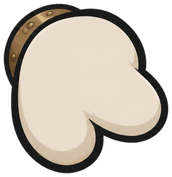
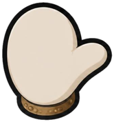
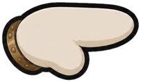
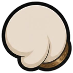
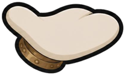

Robot puppet test
Version 3. The buttons are now the robot's real moments in the game. His hands change shape per moment (rest, wave, point, fist, palm up), his eyebrows have a life of their own, and all four talking effects are on. His hands now rest on the console edge, so they stay in view. Drag the letter a to see his eyes and head follow it.





a
Voice
- Hands: each moment picks a hand shape and a place for it. They float a little behind his body, so they trail his moves instead of sliding like stickers.
- Eyebrows: they bob out of step with each other, sometimes one lifts or wiggles on its own, and both jump on loud syllables when he talks.
- Kid idle sinks him behind the console; Wake up brings him back.